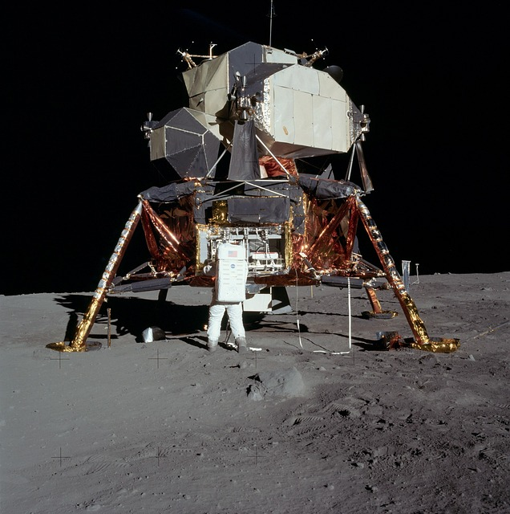
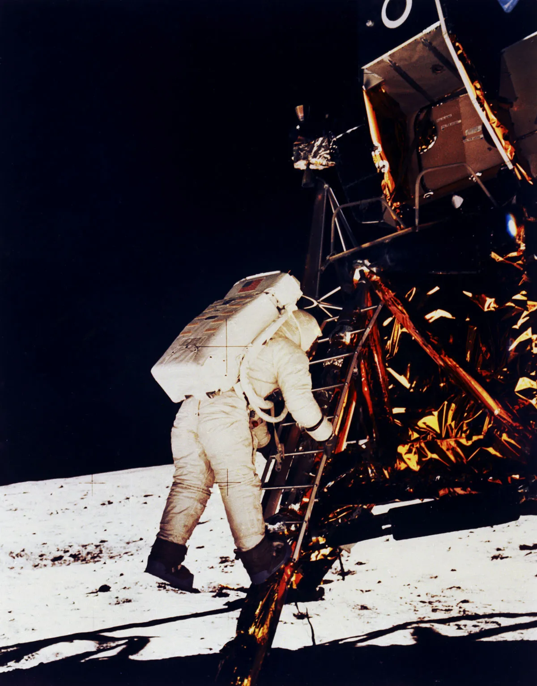
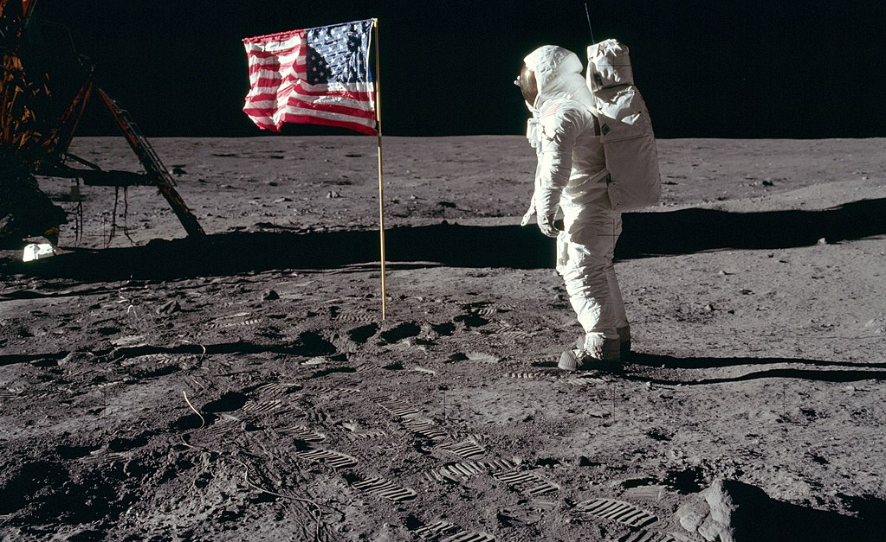

Zdobycie Księżyca to jedno z najważniejszych osiągnięć w historii ludzkości. 20 lipca 1969 roku, misja Apollo 11, z Neil'em Armstrongiem jako dowódcą, oraz Buzzem Aldrinem, wylądowała na Księżycu. Ta niesamowita podróż była ukoronowaniem wyścigu kosmicznego między Stanami Zjednoczonymi a Związkiem Radzieckim i na zawsze zmieniła nasze postrzeganie kosmosu.
Armstrong, wychodząc z modułu lądowania, wypowiedział słynne słowa: „To mały krok dla człowieka, ale ogromny skok dla ludzkości.” To zdanie nie tylko zdefiniowało chwilę, ale także stało się symbolem ludzkiego dążenia do odkrywania nieznanego. 
Po lądowaniu na Księżycu, astronauci przeprowadzili szereg badań naukowych i eksperymentów. Zebrali również próbki księżycowego gruntu, które później przywieziono na Ziemię. Dzięki tej misji zyskaliśmy nowe informacje o naszym naturalnym satelicie, które wpłynęły na przyszłe badania i misje kosmiczne.